The Most Important Page
The Pippen Page
Let's Begin
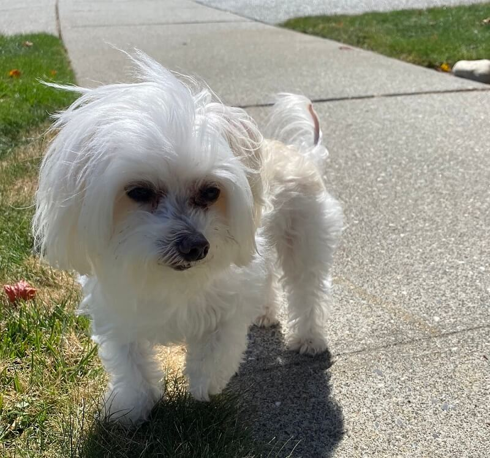- He's a 13-year old Maltese.
- Weighs only 4 pounds, but can be up to 5 if his hair grows long enough.
- One time he got attacked by a neighborly dog, but he made a full recovery, and the neighbors paid for his surgery, so we're all good.
- Has two lumps of fat on his tummy because of said surgery. They're squishy!
- UPDATE: Previously, I wrote that he has 8 teeth. However, he is now toothless and much happier as a result. We have to chop up his food really fine, and I think he likes the extra attention. It makes him feel aristocratic.
An assortment of nicknames my family has given him, in roughly chronological order are: Dogis, Big Boba Eyes, Mr. Pips, Pipis, Crystal Chuu Chuu, Chubby Lovely, Crumb Crumb, Chubbathy Bubbathy.
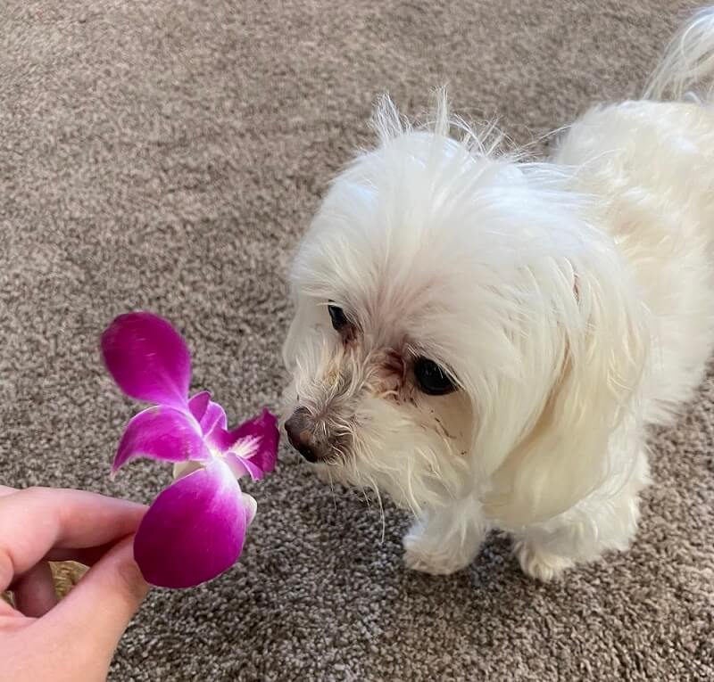appreciating the simple pleasures of life
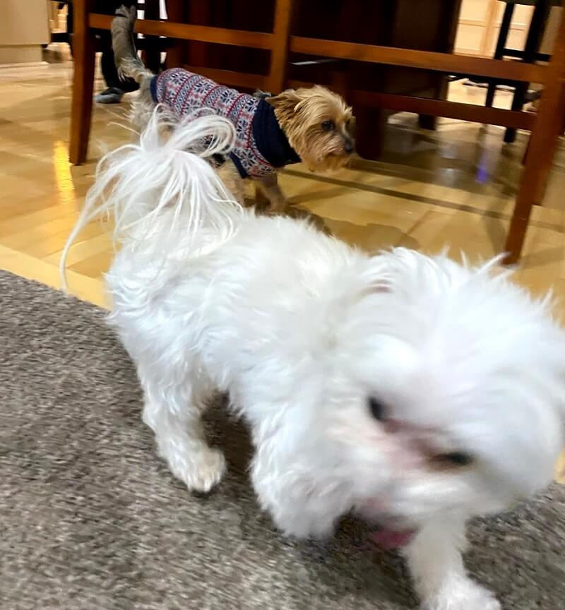that's him and his best friend!
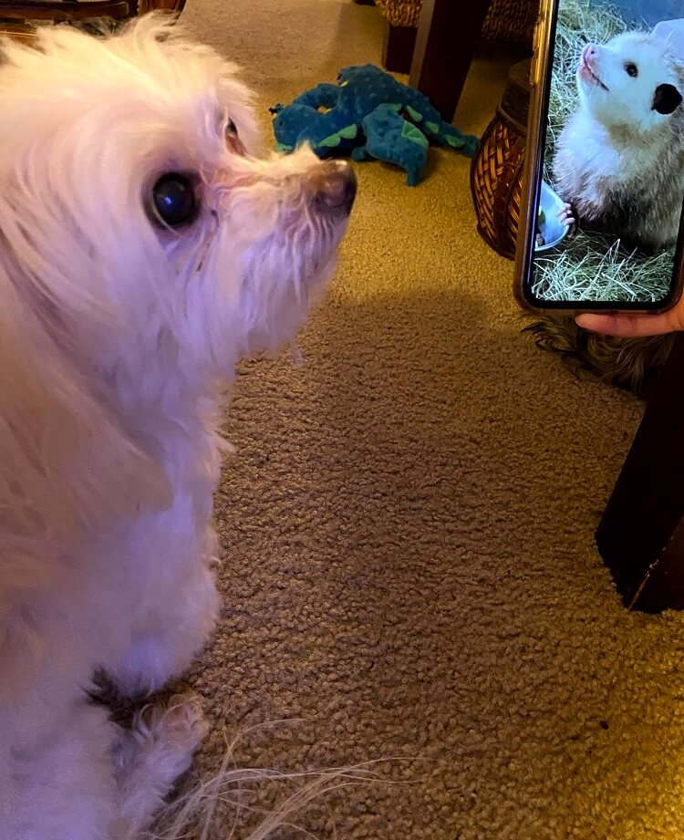resemblance #1: this picture of a rodent
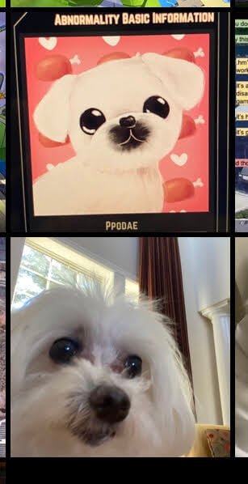resemblance #2: Ppodae from Lobotomy Corporation
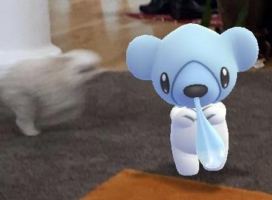vs. Cubchoo
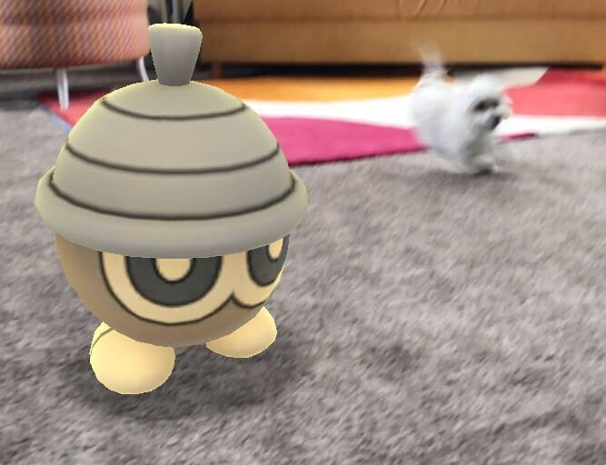vs. Seedot
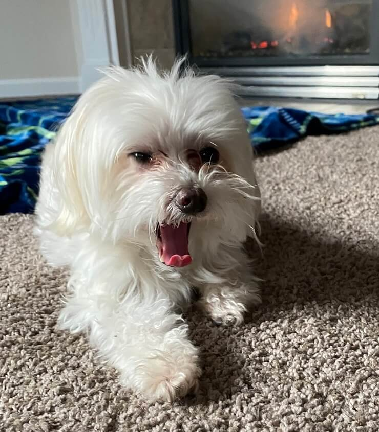tired after his battles
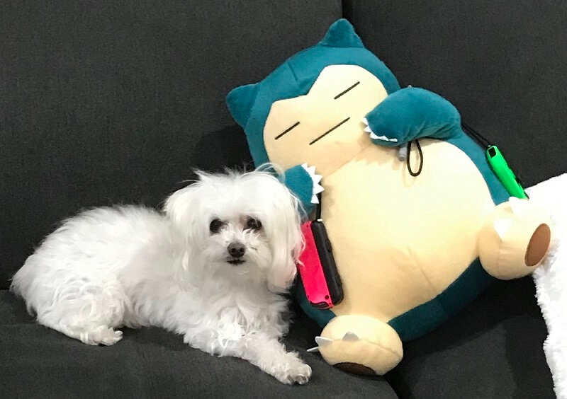resting with Snorlax
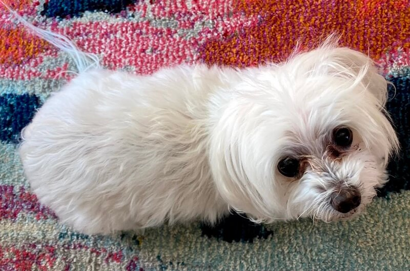transformation into a caterpillar
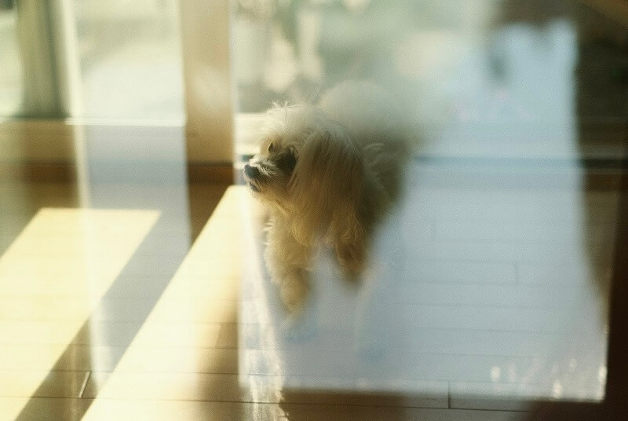photograph by my uncle
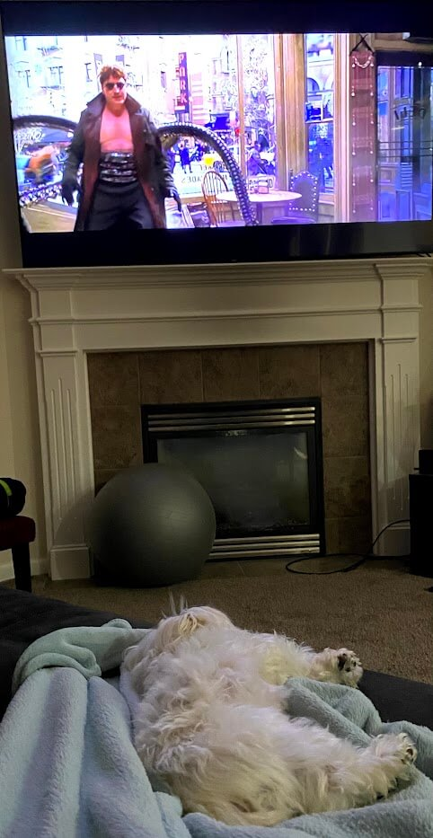White Boy Friday: our Spider-Man 2 movie night (please disregard the fact that I just keep a yoga ball out in the open)
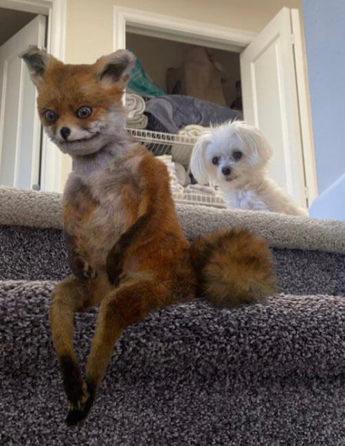Highly threatening photoshop, courtesy of my sibling.